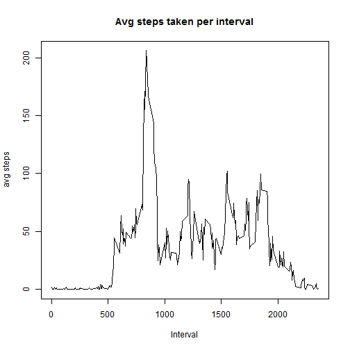

File is unzipped.
The data is read using read.csv
The sqldf library is used to manipulate the data (throughout the code).
library(sqldf)
library(lattice)
unzip("activity.zip")
data <- read.csv("activity.csv")
data_per_day <- sqldf("select date,sum(steps) total_steps
from data
where steps is not null
group by date")
hist(data_per_day$total_steps,xlab="Total number of steps",main="Total number of steps taken each day", col="blue")
mean_val <- mean(data_per_day$total_steps)
mean_val
## [1] 10766.19
median_val <- median(data_per_day$total_steps)
median_val
## [1] 10765
The mean of total steps taken each day is 10766.19.
The median of total steps taken each day is 10765.
avg_steps_per_interval <- sqldf("select interval, avg(steps) avg_steps
from data
group by interval")
plot(avg_steps_per_interval$interval, avg_steps_per_interval$avg_steps, type="l",
xlab="Interval",ylab="avg steps",main="Avg steps taken per interval")

max_val <- sqldf("select interval, avg_steps from avg_steps_per_interval where avg_steps = (select max(avg_steps) from avg_steps_per_interval)")
max_val
## interval avg_steps
## 1 835 206.1698
The 5 minute interval with the maximum average steps taken is interval # 835. The average steps taken in this interval is 206.17.
null_cnt <- sqldf("select count(*) from data where steps is null")
null_cnt
## count(*)
## 1 2304
The number of 5-mintue intervals with NA values is 2304
The strategy for filling all NA values is the avg of steps for that 5-minute interval across all days.
If a NA (null) value is detected, the avg_steps value of the same interval is used (from the calculations done in the previous section - part 3)
data_imputed <- sqldf("select
case when steps is null then avg_steps else steps end i_steps ,
date, data.interval, avg_steps
from data , avg_steps_per_interval
where data.interval = avg_steps_per_interval.interval")
data_per_day_imputed <-
sqldf("select date,sum(i_steps) total_steps
from data_imputed
group by date")
hist(data_per_day_imputed$total_steps,xlab="Total number of steps",main="Total number of steps taken each day (data imputed)", col="red")
mean_i <- mean(data_per_day_imputed$total_steps)
mean_i
## [1] 10766.19
median_i <- median(data_per_day_imputed$total_steps)
median_i
## [1] 10766.19
The mean of total steps taken each day (after filling NA values) is 10766.19.
The median of total steps taken each day (after filling NA values) is 10766.19.
The mean has not changed. The median has changed, and is now equal to the mean.
Calculating the average steps for each interval - seperated to weekday and weekend intervals.
Then, Plotting the time series of weekday days and weekend days.
data_imputed$date_type <- sapply(weekdays(as.Date(data_imputed$date)),switch,
Monday='weekday',
Tuesday='weekday',
Wednesday='weekday',
Thursday='weekday',
Friday='weekday',
Saturday='weekend',
Sunday='weekend')
data_imputed_avg <- sqldf("select interval, date_type, avg(i_steps) avg_steps
from data_imputed
group by interval, date_type")
par(mfrow=c(2,1))
xyplot(data_imputed_avg$avg_steps~data_imputed_avg$interval | data_imputed_avg$date_type, type="l",layout=c(1,2),xlab="Interval",ylab="Number Of Steps")